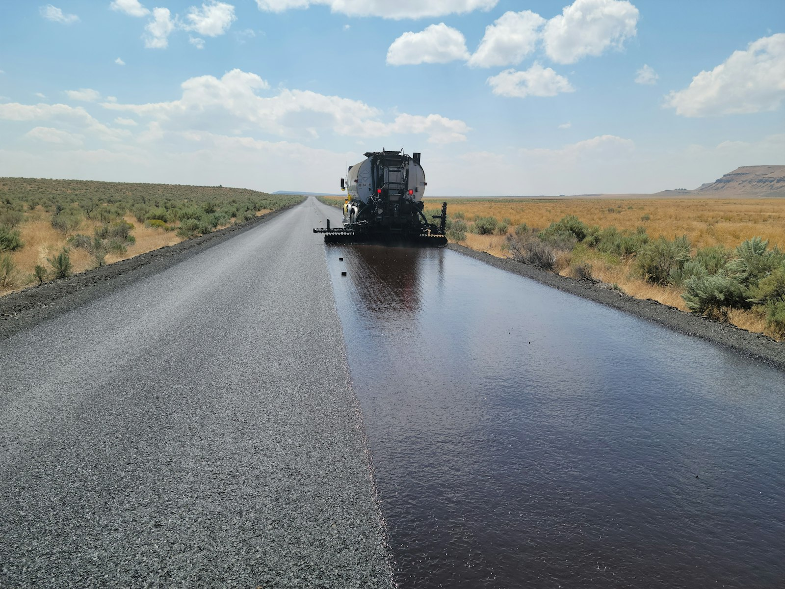

사업 개요
제일물산(주)는 1957년 1월 12일에 설립되어 아스팔트 도매업과 건물임대업을 주사업으로 영위하고 있습니다.

01
아스팔트 도매업
제일물산(주)는 아스팔트 도매업을 주사업으로 하는 기업으로, 1957년 설립 이래 아스팔트 도매업을 이어오고 있습니다. 1964년 9월에는 대한석유공사(現 SK에너지)와 아스팔트류 전국판매대리점 계약을 체결했습니다.
02
건물임대업
제일물산(주)는 아스팔트 도매업과 함께 건물임대업을 주사업으로 영위하고 있습니다.
알아두기
사업을 이해하시는 데 도움이 되는 일반적인 설명입니다.
아스팔트
원유를 정제하는 과정에서 얻는 검고 끈적한 물질입니다. 도로 포장에서 골재를 서로 붙이는 결합재로 널리 쓰입니다.
도매업
생산자나 공급자에게서 상품을 사들여 소매업자나 산업 수요처에 다시 공급하는 유통업입니다.
문의
사업 관련 문의는 아래 연락처로 부탁드립니다.
TEL02-2636-4671
FAX02-2636-4673
ADDRESS서울특별시 영등포구 버드나루로 84